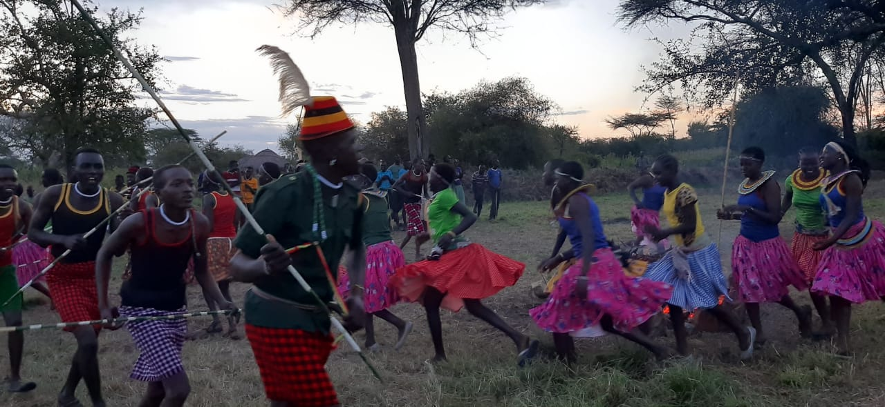
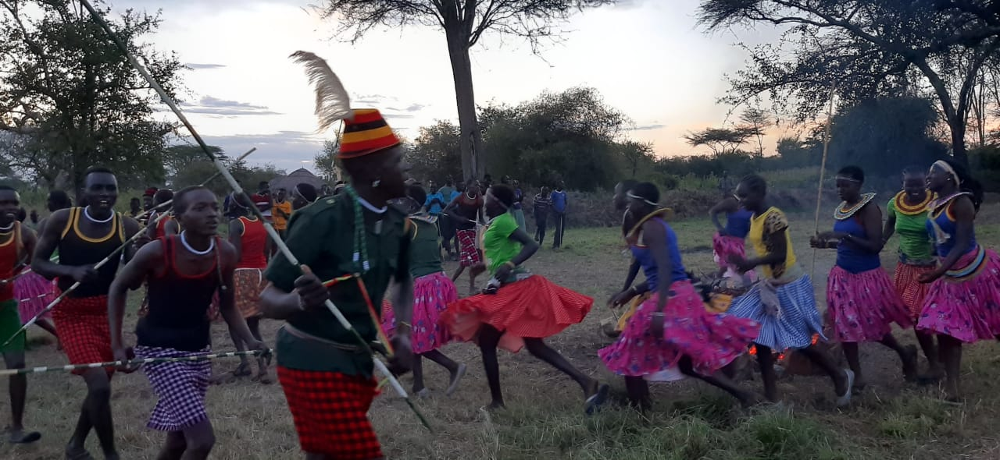

Our Story
St. joseph the worker was established in 2021 in Kosike, Amudat, Karamoja, Uganda, as a pioneering initiative to empower youth through vocational training, cultural preservation, and sustainable community development. Born from a vision to transform lives, St. Joseph the worker is committed to building peaceful, self-reliant communities by equipping young people with practical skills and confidence.
Our Mission
To equip Karamoja’s youth and local communities with practical vocational skills, leadership, and entrepreneurship training that promote peace, cultural pride, economic independence, and environmental stewardship.
Our Vision
A transformed Karamoja where empowered youth drive sustainable development, nurture peace, and preserve the rich cultural heritage of the region for future generations.
Our Values
- Integrity: We act honestly and ethically in all we do.
- Community: We believe in the power of unity and mutual support.
- Innovation: We encourage creative solutions to local challenges.
- Sustainability: We promote practices that protect the environment and future livelihoods.
- Respect: We honor the diverse cultures and traditions of Karamoja.
Your support can transform lives in Karamoja. Donate Today
and help us build a brighter future.
 
